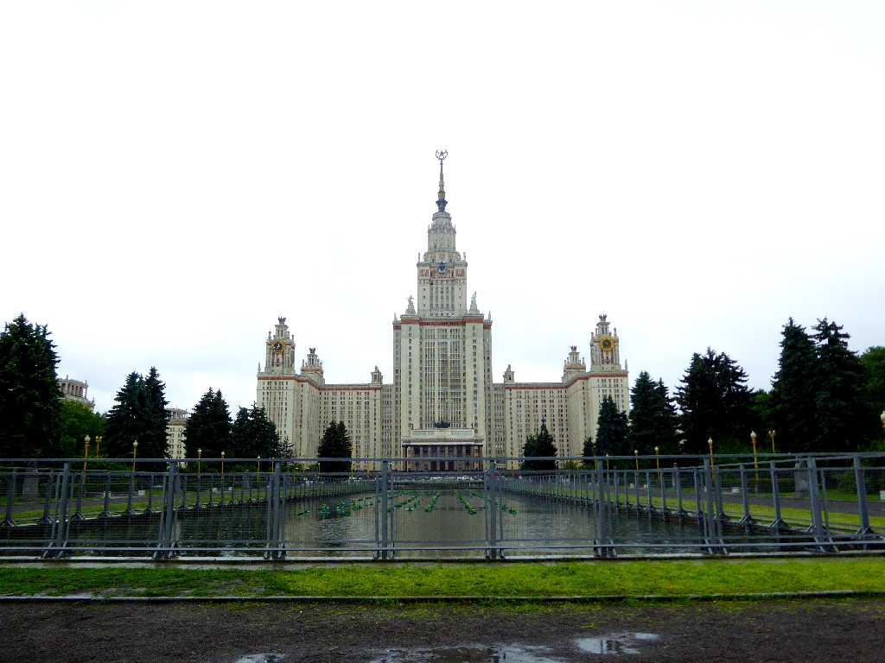
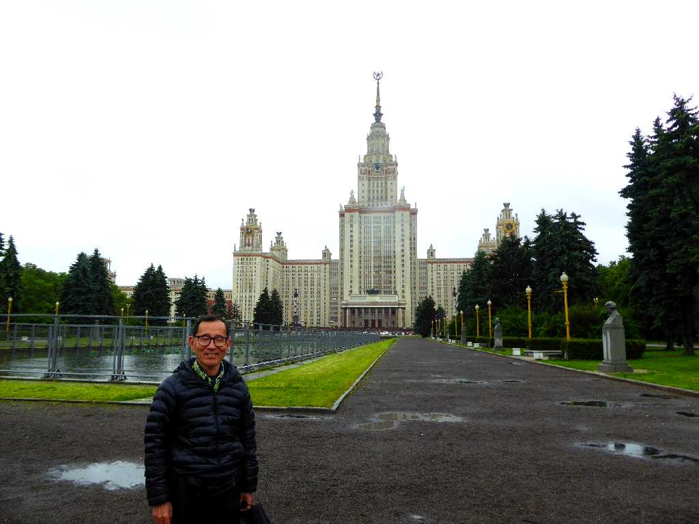
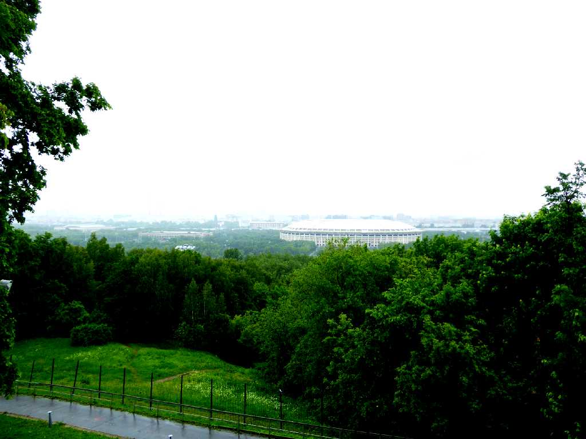
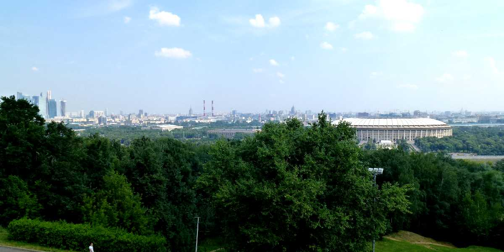
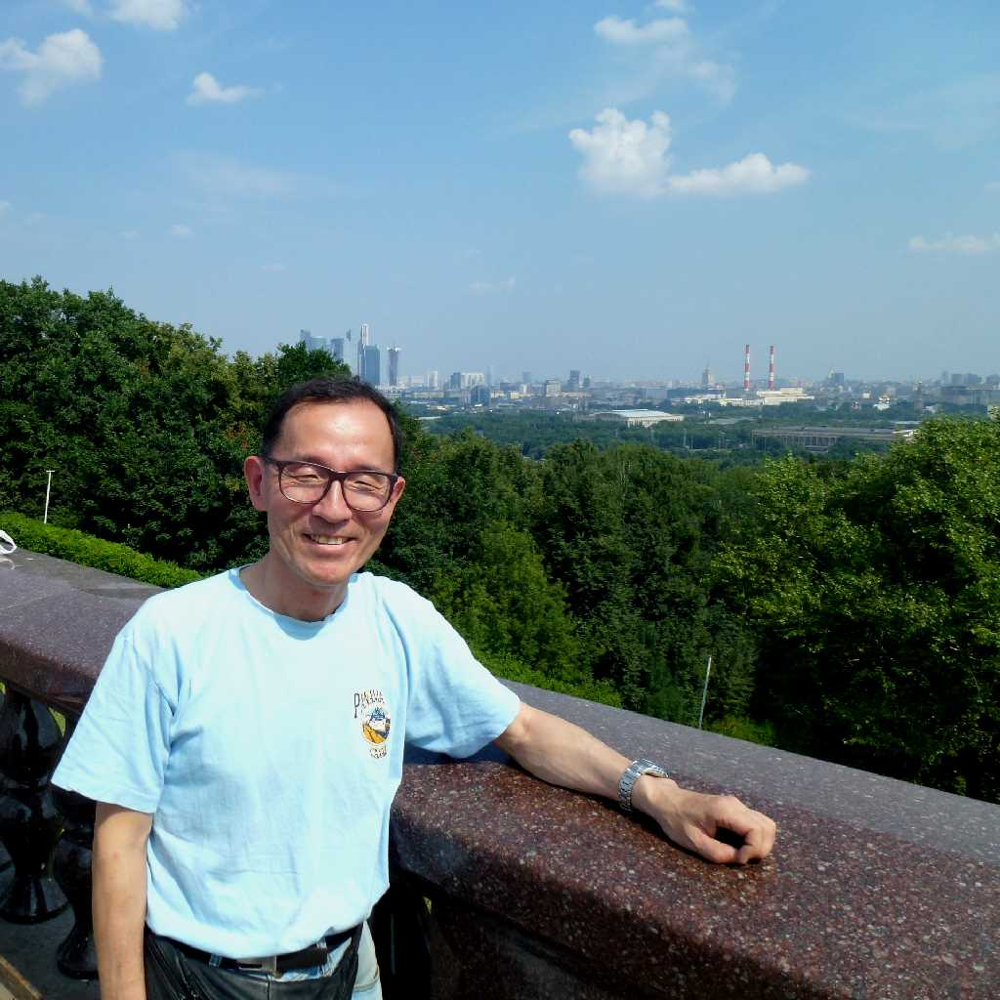
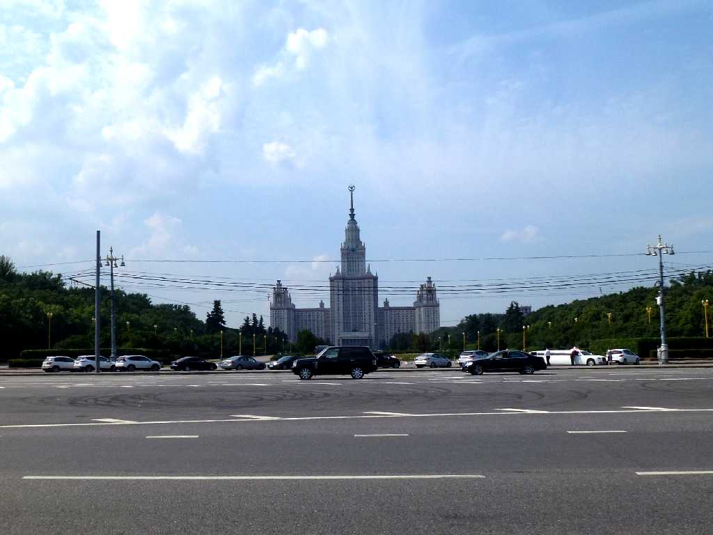
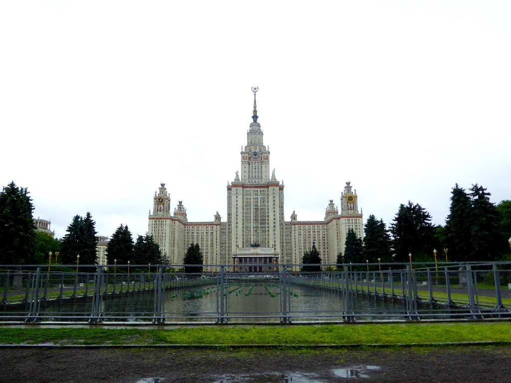
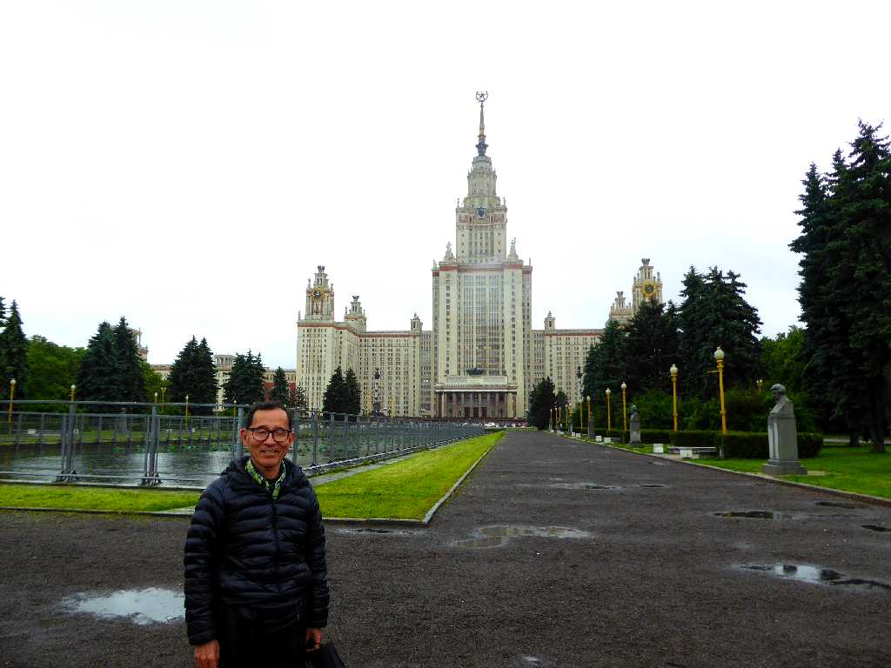
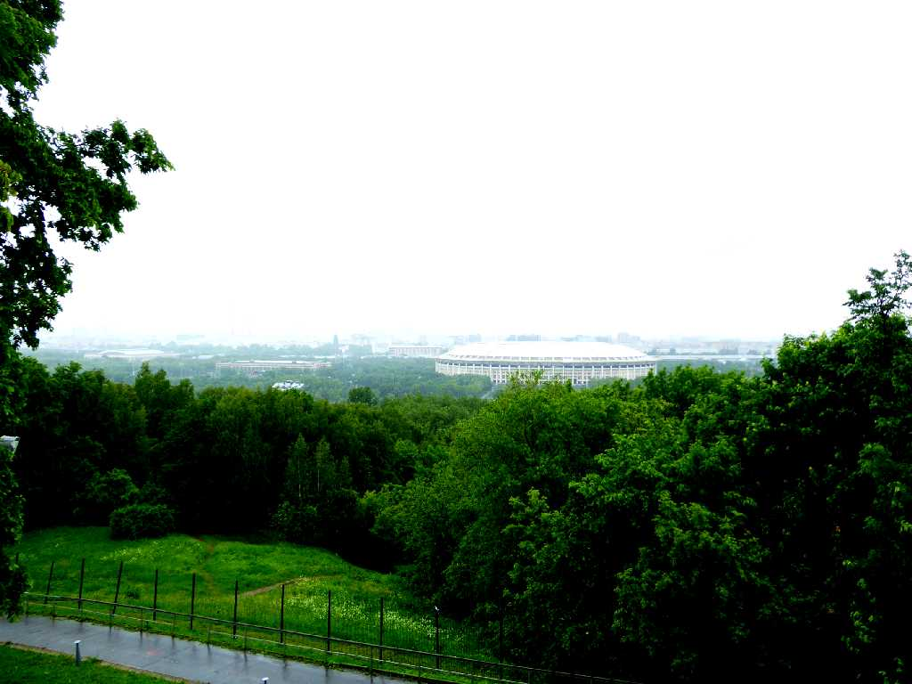

Lomonosov Moscow State University Moscow
８０日間世界一周鉄道の旅で訪問以来４年ぶりの再訪問

June 15 2017 Lomonosov Moscow State University

Sparrow Hills



Sparrow Hills Moscow
８０日間世界一周鉄道の旅で１２日目の今日は雀が丘からモスクワ市内を望む

July 5 2013 Sparrow Hills

Lomonosov Moscow State University
モスクワ大学

Lomonosov Moscow State University Moscow
８０日間世界一周鉄道の旅で訪問以来４年ぶりの再訪問

June 15 2017 Lomonosov Moscow State University

Sparrow Hills